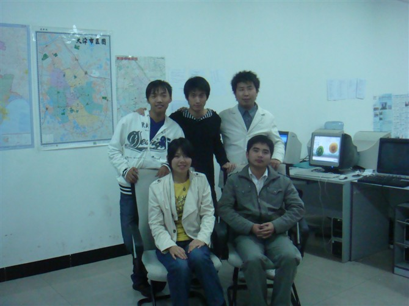
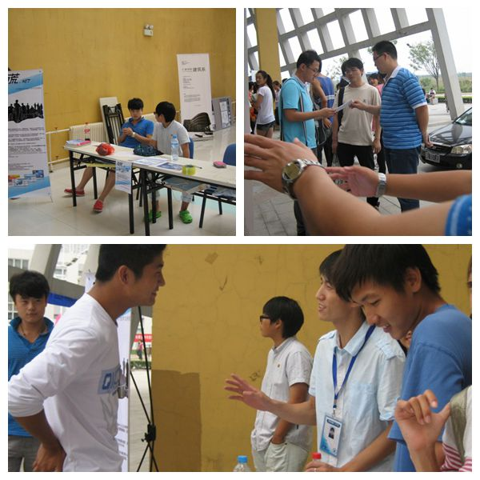
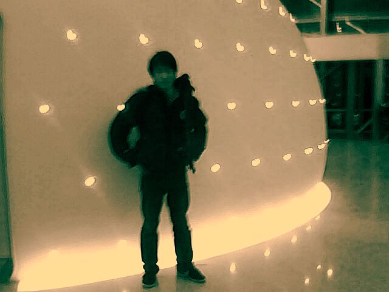
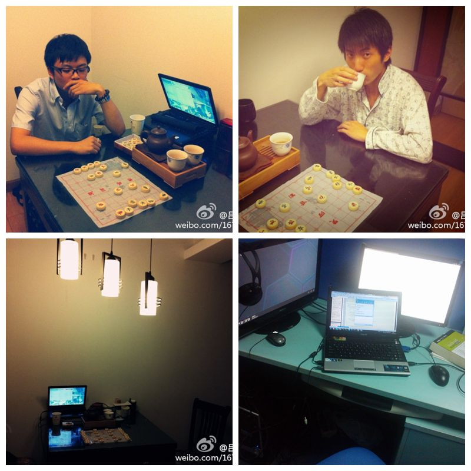
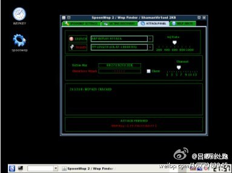

居然又要写简历了，好头疼，为了丰满liqun.me这个该死的about分类，又不得不写点什么。不过罗列整理下平生，总是好的，回望下过去，可能会有更利于展望未来吧！
肖立群
88年生人
天津大学仁爱学院 通信工程系 07级 11届
自幼喜欢科学、电子、数码，最爱问为什么，会捧一本《宇宙索奇》发呆一下午 小学发表了多篇作文，得瑟到死。
六年级从呆了5年的美术组偷跑到了计算机兴趣小组，学习Qbasic（让我想起恨到死的杨辉三角），跟画图工具，与好友“狼”共绘了一幅四格漫画《乌鸦喝水》，还得了个2等奖，当时兴奋到死啊！

同年，父亲厂子添置了一台开发票的联想电脑，从此踏上挨踢不归路。
初中汇总所有画图工具的各种奇技淫巧，得一文，在《少年电世界》作了两篇连载，这是我人生发表的第一篇技术文章。意义重大，给了我自信，坚定了我把这条不归路走下去的信心…… 此后多少日夜在父亲的办公室里折腾到很晚，还记得某晚第一次在Frontpage里无意作了一个超级链接，那晚的兴奋至今还记忆犹新，这也掀开了我折腾web的序幕。
后来互联网忽然掀起了一阵很火的闪客风，犹记得当年台湾超搞笑的《阿贵系列》，还有林’C的《重爱轻友》、《忍者》和《绝望生鱼片》等，还有就是超火的《小小系列》，我便也随大溜学习起了flash，记得后来某年过年七年我还模仿他做了一个动画，再后来用flash制作了一个自我简介，有个小人讲诉的那种（还亲自配音哦），电子邮件给了科技组的老师，老师让我出个作品参赛，结果我制作了个网站，哎~到最后都没能把动态脚本写出个名堂来，就交作品了，纯静态网页也能得个二等奖……不管怎么说在当时也算是一项小成就吧，再后来，就无聊到跟朋友参加了橡皮筋飞机航模比赛，仍旧得了二等奖，话说我怎么老得二等奖（千年老二的节奏么）……（初中是我idea爆炸的一年，曾经想过跟网吧老板谈合作，把桌面租用然后卖广告，甚至还打了好多个电话给网吧老板谈了下来试探其可行性，现在看来这不正是好多公司在干的事情么……）
再后来，就进入了高中了，高中是我人生最灰暗的3年，计算机没得摸，只能偶尔脑子里意淫意淫。高中的学校、高中的老师、高中遇到的事情、高中遇到的人都让我无比烦躁与焦虑。真可以说度过了人生最一无是处三年。因此离开高中后学校的活动、聚会一概不参加，也不想关注。唯一感激的就是最后的时间里，那个黑妹凶八婆英语老师奇迹般的拯救了我的英语，这就是我高中最大的收获了。忘了，还有一个收获就是我很庆幸我选择了地理作为我3+2科目之一，因为我对文科类的东西一窍不通，忘得比谁都快，这三年，我总算有了点地理意识，而且我分数还可以。好吧，这是我的高中最值得缅怀跟感激（应该是庆幸）的两项了。
到了大学终于让我慢慢从高中的阴影中走出来了。各种活动参加得可欢了。先是参加了轮滑社（我从小就喜欢带轮子的玩意儿），后来参加了科技社（最感兴趣的永远是科技社），跟着学习入门了一些C51单片机的知识，只是一直没能出什么作品，一大遗憾啊，唯一算作品的就是学期快结束的时候自己搭建了一个电子钟，包括其程序，后来还被拆了……（连中断都没用，时间是根据晶振估计出来的……）。
在大学还跟大学同学一起折腾办公司过，做打折消费会员卡类的产品， 现在想起来都觉得有点不可思议，而且加盟了200多家商家，简直难以想象的任务啊！当然也销售了不少卡。其实那不就是团购商业的前身么？虽然最终这件事情没有能走到最后，在我心里这件事情也不能算多成功，但我真心觉得这件事情是我人生中的一笔宝贵的财富，为我将来可能的创业提前打下了基础。
再后来就转型了，开始给外面的公司制作宣传单页，企业内部杂志。我也开始给外面的公司制作企业站，生活很累，但也算是充实有意思。


再后来，跟一位好兄弟Lambert合作，跟校领导沟通下，决定举办一届学校宽带登陆界面的设计大赛，为甚么要改这个页面呢？因为这个页面，是学校里每个学生每天打开浏览器看到的第一个页面，必须在这个页面登陆才能上网。因此我们觉得这是学校里的非常重要的战略资源。我们还给原先简陋的登陆界面增加更多实用功能，比如能跟学校教务系统打通，采集其通知在这个页面弹出提示，让每位同学都不会错过重要通知。校领导对此也很满意，为此还举办了一个晚会，效果超赞！（倍儿有面子，好多重量级领导参加呀！），这也是人生的一笔宝贵财富啊。也正因为这些折腾，我明显感觉到了自己的不足，与大学生创业的艰难。因为一个大学生，你所拥有的真的太少了。经验缺乏，知识储备缺乏，人际资源缺乏……其实最最不利的因素是马云的偶像作用，大学生满脑子都是马云，比尔盖茨，我一直认为把他们作为偶像，很难成功。因为大部分人只能看到他们光辉的一面，他们的光辉掩盖了他们踏实、认真、苦逼的过去，满脑子要创建软件帝国、电子商务帝国。看得太高就容易脚底悬空，殊不知再伟大的帝国也是一块砖一块砖，一个城一个城构成的。经历过大学的那段经历后，我一直觉得，认真面对当下，踏踏实实、沉稳低调，即使你再聪明，也要把自己当个傻瓜，只有这样才有可能真的创造一个属于自己的帝国。因此，再后来，我开始不再折腾乱七八糟忙着挣钱的事情了，开始沉下心来补基础。先是w3school补html的框模型，w3c标准，别且给一家CMS公司做了很多页面重构的项目。后来开始重新系统学习php，天天对着php100的教程练习每一个例子，然后我开始有了大量作品，比如学校的会议室预约系统，帮老师完成了一款中石化全国事故汇报系统，还参加了百度大学生乡村信息化创新大赛进入到了最后阶段，以一个水芹的互联网推广项目的构想在百度中心的大会议厅作了我人生第一次重量级演讲，而且在匆忙未准备之下。好在效果良好，信心倍增，虽然这个项目未能在这次比赛中走到最后，但是我随后真的把这个项目落了地，跟常州的一个老板谈了这个事情，这个老板人非常好，对我很信任，但这件事情没能如预料的发展到最后，原因很复杂，甚至后来域名都丢失了，但始终是我的一个心结，我很快又把域名重新抢到手，我在想等哪一天还有机会，一定再启这件事情，就像京东搞大米，网易养猪肉一样，我也认为农副食品是个不错的行业，有待互联网模式来帮助其进一步突破瓶颈……不管怎么说，大学就这样还算充实地度过了。

离开学校后，准确的说是即将离开的时候，我加入到了一家国内挺有名的SEO电子商务公司，南京科泰，曾经国内的顶级SEO团队点石的所在公司，因此我也对这其充满两向往。我之所以了解到这家公司是因为之前草根站长的经历我认识到了一位老乡@子非鱼，也是早期草根站长时代的风云人物，从google ads挖了不少刀。他在这家公司好几年了，所以我也屁颠屁颠地跟着来了。
我非常幸运地加入到了这家公司的架构师部门，从事架构相关的研发工作。记得当时完成了两个还算有价值的作品，一个是服务器状态批量检查器，一个是DMDeliver的改进。后来还研究了cacti的二次开发方案，还有与相关SNMP协议，可惜我尚未来得及在这上面做点什么，就离开这家公司，被一个大学一起折腾的好兄弟Lambert忽悠到了上海，跟着芮总开始了创业型公司的生活。
这是一家动画类教育产品的公司，我在这期间负责开发了公司的android客户端，OTT数字电视客户端（其实也是个android客户端），还有各地iptv的项目对接部署，前期技术对接可行性谈判的工作。不得不说，真的很累，虽然在技术上我并没有多少长进（因为每天都疲于应付各种任务），但是在其他方面倒也学习到了很多，看到了一家创业公司如何运作，生意怎么达成？合作怎么谈？还见识了很多国企、事业单位办事情是有多弱，多么要死要活。CCBN的展览的那几天，见识到了现在很多多媒体公司在做些什么，研发水平跟进度又是怎样？总体来说，经历过这些后我更加有信心面对未来了！


上海的一年经历真心让我心力交瘁，其实我真心不怕身体上有多累，主要是心累了。加上未来硬挤在上海的话，可能有个不错的工资，但也仅此而已了。房子仍买不起，车子挤死人，那是有钱人的天堂，穷逼的地狱，机遇与风险并存。于是我开始启动了我称之为的“大撤退”战略来到了常州，在我心里我认为这次行动某种意义上来讲是属于长征那种性质的，战略大转移。为什么我非要加上战略二字呢？我因为我真心不认为这真的是一次撤退，应该是以退为进，曲线救国。到一个更加宜居的城市，一方面我可以有更多自己的时间研究学习更多的知识。另一方面在此安家的成本大幅降低。各方面压力小了之后更有利于我放手一搏！再一方面就是常州的各方面成本降低，为未来可能的创业降低了风险、降低了成本。还有就是离家近，父母年纪都大了，靠近点总是好的。唯一的劣势就是我怕我会太安逸而忘了我的初衷。现在栖身于常州化龙巷，一家本地生活消费类社区网站做开发。工资是低了点，但咱不是要默记来之前心中的那“战略”二字嘛。在这家公司折腾这么大半年以来唯一让我觉得有意义的事情就是现在在做的重构原先phpwind的read.php跟thread.php架构。原先的逻辑真是目不忍视啊……
到了常州之后我还开始学习了Arduino，Raspberry Pi。用Raspberry Pi搭建自己的服务器，用arduino制作了一台小车，当然都应该算是比较低的档次的玩意儿，等我的Just发布完之后，我就可以好好地，更方便地记录下面更加重量级的作品的开发过程啰！搞不好将来我还可能向嵌入式方向发展呢。本来嘛，我从小就对电子感兴趣，就一直没能彻底系统学习过。大学的书也基本是一略而过，未理解其精华也……
好了，终于基本总结完了这么多年的一些屁事了。基本算是可以交差了，还有什么就以后补充吧。人未老，先立传……也好，省得老来忘掉了。(^__^)。
- Email：xlqstar at gmail.com
- Weibo：http://weibo.com/u/2867098822
- GitHub：https://github.com/xlqstar